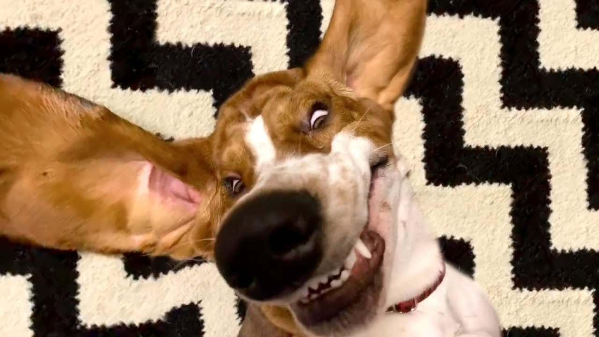

This is your title!

8/20/23 My name is Ronan Fisher and this is my epic journal entree about my experiences in engeering.
This first week started with me and my fellow classmates indulging in a challenge of wits.
The purpose of the challenge was to test our ability to work as a team to achieve a single goal.
The objectve was to roll a marble into a bucket without it rolling backwords using only short half cut pvc pipes.
We started great being far ahead of the opposing team, almost getting to the bucket every time.
To our dismay the other team suddenly improoved at a rapid rate causing us to panic which gave them the advantage resulting in our defeat.
Even though we lost it was a great lesson to us on why it is important to learn from our mistakes.
our mistake was that every time we got close to the bucket the person in charge would not angle the ramp properly so it would just miss.
8/27/23 This is my seccond week of school and it consisted of learning tinkercad,, mechanical engeneering, and drafting our rube goldberg machiene.
We learned about machanical engineering which i don't remember much of, but im sure we learnt about the uses and the different organizations.
I was absent for the day we learnt about the tinkercad, but that does'nt matter because i already have experience with it from another class.
The idea for our rube goldberg machiene was my idea and i thought of it because the last project i bult was a roller coater and it was kind of similar.

9/5/23 this is my third week of school and wee started to buld our rude goldberg machiene
in our first phase of bulding we spent the intire time cutting pieces of cardboard to buld when we had all the pieces of a specific part we just bult that part then moved on
we bult a box for the car to sit in and the first rap that are baseball would roll down our only challenge with bulding was making the box because micheal deided to ct the shape then fold the corners in instead of just cutting the sides then taping them together
our only problem on tinkercad was creating the corners that the car would go around. this was a problem because we wanted the car to use the rounded corner to slide around the corner
we solved this problem by getting a circle and stretching it out so that we could make a hole in a rectangle creating a rounded corner
we also could not dissighn the string for the pully because there was no option that we could find that would make that shape in tinkercad
9/11/23 this is my fourth week of school and we spent teh time finishing our rude goldberg machine and testing it
we bult the pully by cutting circles of cardboard and impaleing then all together with a paperclip. then we put two bigger curcles pn the outside that would keep the string guided
the pully was held up by other pieces of cardboard with supports and the legs were taped to the base. the string would glide on top of tape to reduce friction
our only problem was that the baseball was not heavy enough to lif the car we were using so the project did not work at first
we tried multiple ideas to try to make it work but nothing seemed to make a difference because the car was just to heavy and the cather was not big enough to allow us to add weight to the pully
we were then blessed with a smaller car but our dissighn was still to complicated for the amount of time that we had. so we simplifed it so that the car would just be lifted on a ramp that would lead it to a baloon
this worked and we were able to get the project done. the eliments that we used to buld it were incline plane, pully, wheel and axle (car).
9/18/23 this is my fifth week of school and it consisted of creating a flotation divice made out of one peiece of paper and creating a paper E acording to a classmates instructions
my floatation divice was extremely simple, i just folded the sides of a sheat of paper in to create a box. then i added 76.1 grams of weight to the box to see how long it could float
it floated for the meximum amount of time which was five minutes. I was kind of luckey though because my box had a hole in the bottom that allowed water in. the reason im luckey is because the weight pluged the hole allowing it to float
for the paper E my partner gave the worst instructions ever which made everything more difficult. the top and bottem length for the E was half a centimeter different which made making the side a lot more difficult.
there messurement were extremely specific but in a bad way that just caused me to have problems. it worked out though and i was able to complete it.
10/19/23 This is my ninth week of school